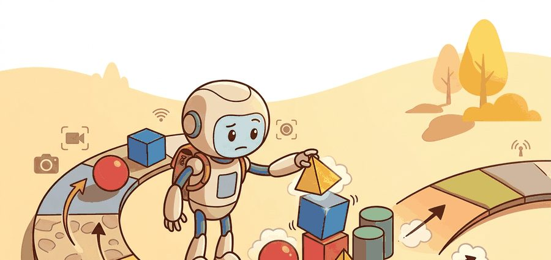
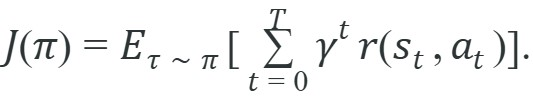
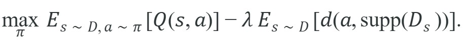

Figure 25.1.B: The pipeline makes the hidden offline RL assumption visible: a policy update is only trustworthy after the behavior-support check has constrained the critic's optimism.
"The environment is not running. The dataset is all you have. The policy must become good on evidence it cannot extend."
An Offline Optimizer

This section assumes familiarity with the Bellman return objective introduced in section 2.6 and with the distribution-shift problem covered in section 21.2, as both concepts underpin why offline RL requires a support constraint. The conservative policy update developed here is extended in section 25.3, which implements it through CQL, IQL, and behavior-regularized actor-critics. These ideas recur in Part VI alongside safe exploration and offline-to-online transfer, where the same pessimism principle governs when a policy trained on logged data may be deployed on a physical robot.
A warehouse robot has logged two million grasping attempts. No engineer wants to run another million live trials while the line is stopped. Can the robot get better using only those logs? Right now, large static datasets collected from fleets of deployed robots represent some of the richest behavioral data ever assembled, yet standard RL throws that data away the moment it touches the environment. Offline RL keeps the dataset and closes the loop purely through value estimation, which is typically how practitioners get fleet-scale robot learning to work without stopping the line. By the end of this section you will understand exactly where the value function breaks under distribution shift and how pessimism over unsupported actions restores reliable improvement.
Picture a critic that confidently assigns a value of 7.5 to a gripper pose no robot in the dataset ever attempted, then watch a policy march straight toward that phantom optimum and snap a finger joint: that single act of misplaced confidence is the entire reason offline RL must make the behavior policy, support envelope, reward labels, and candidate-policy update explicit before any robot rollout is trusted.
As Figure 25.1A illustrates, the agent never touches the environment. It optimizes purely from logged transition tuples, which is why selecting actions outside the behavior distribution becomes the central risk. The motivating failure is extrapolation: a learned critic may assign high value to an action that never appears near that state in the dataset. In a tabletop task, this can mean choosing a gripper pose that looks optimal numerically but has no demonstrated contact evidence. Consider the scale. In the D4RL locomotion benchmark (a standardized suite of logged robot-locomotion datasets used to compare offline RL algorithms) results reported around 2020 to 2021, a naive offline policy exploiting unsupported actions typically reaches roughly 10% of expert return. Adding a support constraint typically recovers 85% or more in these benchmark settings, a gap largely attributable to constraining the critic to regions the dataset has seen. This is the inverse of the behavior cloning distribution-shift problem, where the policy drifts from states it was trained on; here the value function drifts from actions the dataset supports, a failure mode called critic overestimation outside support, and it is the central hazard of offline RL. A policy trained on a frozen dataset cannot ask the environment for corrections; it must earn trust from evidence already on the table, or not at all.
For Learning without online interaction, the policy is allowed to improve only inside measured dataset support; outside that support, the value estimate should be treated as a risk signal.
Treating the value estimate as a risk signal outside support only has meaning once we can say precisely what counts as inside support, and that boundary is fixed entirely by the policy that generated the data.
The next three paragraphs establish, in order, the behavior policy that defines support, why acting outside that support is unsafe, and how support is estimated in practice; only after all three are in place does the pessimism term in the objective below make sense.
The behavior policy is the policy that was actually running on the robot when the dataset was collected: a human teleoperator, a scripted controller, or a prior model. The dataset's action coverage is exactly what that policy chose to do, nothing more.
Any joint position, gripper pose, or contact configuration never commanded during collection has no observed outcome in the data. A critic trained there gets no error signal and assigns arbitrary, often inflated values. Act on those values and the robot commands configurations with unknown load or contact geometry, inviting slips, collisions, and actuator faults.
In practice you estimate the behavior policy's support by fitting a density model or computing nearest-neighbor distances over logged state-action pairs. That estimate then becomes the penalty term $d(a, \mathrm{supp}(D_s))$ in the objective below. To build equivalent coverage through live trials, a robot would need roughly 40,000 to 80,000 additional environment steps just to visit the joint-configuration regions a support estimator reads off the existing dataset in seconds. The constraint does not limit ambition; it converts a data-collection bottleneck into a one-time computation.
For Learning without online interaction, the baseline objective is useful only after the data distribution and robot action scale are fixed; otherwise expected return can reward unsupported commands. The expected return $J(\pi)$ below is the same Bellman-grounded objective used throughout RL, but here the expectation is taken over a frozen dataset rather than live rollouts.

For Learning without online interaction, the practical objective needs a pessimism or support term because training cannot ask the real robot whether a novel action is safe.

For Learning without online interaction, the pessimism term should expose unsupported gripper poses, contact modes, saturation regions, missing viewpoints, or reset states rather than hiding them in one value estimate. Figure 25.1.B traces this contract end to end, showing how the logged dataset flows through the behavior-support check and pessimistic critic before any policy update is trusted on the same evaluation panel.
Code Fragment 1 for Learning without online interaction compares three candidate gripper actions against five logged actions and applies a distance-based pessimism penalty only after the support metric and robot action scale are explicit.
# Estimate how far a candidate robot action sits from logged support.
# The penalty grows when the policy proposes actions absent from the dataset.
import numpy as np
logged_actions = np.array([[-0.2], [-0.1], [0.0], [0.1], [0.2]])
candidate_actions = np.array([[-0.15], [0.05], [0.65]])
raw_q = np.array([4.8, 5.0, 7.5])
support_distance = np.min(np.abs(candidate_actions - logged_actions.T), axis=1)
pessimistic_q = raw_q - 6.0 * support_distance
for action, q, dist, guarded in zip(candidate_actions[:, 0], raw_q, support_distance, pessimistic_q):
print(f"a={action:+.2f} raw_q={q:.2f} support_dist={dist:.2f} guarded_q={guarded:.2f}")Trace the support guard with three candidate actions against logged support at {-0.2, -0.1, 0.0, 0.1, 0.2} and penalty coefficient 6.0. Action a=-0.15: nearest logged action is -0.1 or -0.2, so support_dist = 0.05; raw_q = 4.80, guarded_q = 4.80 - 6.0*0.05 = 4.50. Action a=+0.05: nearest is 0.0 or 0.1, support_dist = 0.05; raw_q = 5.00, guarded_q = 5.00 - 0.30 = 4.70. Action a=+0.65: nearest logged is 0.2, support_dist = 0.45; raw_q = 7.50, guarded_q = 7.50 - 6.0*0.45 = 7.50 - 2.70 = 4.80. Before the guard, ranking is 0.65 (7.50) > 0.05 (5.00) > -0.15 (4.80). After the guard, the unsupported 0.65 drops from first to a near-tie at the bottom, and the policy now prefers the in-support 0.05, exactly the reversal the pessimism term is designed to produce.
The action at 0.65 arrives with a raw Q-value of 7.5, full of confidence, having never actually been tried near that state. The pessimism penalty is not punishment: it is the dataset politely noting that enthusiasm without evidence is just extrapolation with good posture.
Because the environment never provides feedback during training, the decision to deploy is itself made offline: a policy graduates from this pipeline only when its pessimistic value estimate on held-out logged states matches or exceeds the behavior policy's own estimated return, and the support audit shows no meaningful probability mass on actions the deployment robot would need but the dataset never demonstrated. If either check fails, the fix is to collect more targeted data, not to relax the pessimism coefficient.
With the support guard now concrete enough to trace by hand, the remaining question is operational: in what order should you actually apply these checks when handed a real robot dataset?
Before passing a robot dataset to d3rlpy, call d3rlpy.preprocessing.MinMaxActionScaler (or StandardScaler) and set it as the action_scaler argument in the algorithm constructor. If you skip this step, the pessimism coefficient alpha in CQL is calibrated against raw action magnitudes, so a dataset recorded in meters will apply a penalty 1000 times larger than one recorded in millimeters, producing a policy that refuses nearly every action. A quick sanity check is to print dataset.actions.min() and dataset.actions.max() before training: if the range exceeds roughly [-1, 1], apply scaling before calling algo.fit().
For Learning without online interaction, use d3rlpy, robomimic, or LeRobot after the support audit is defined; the library may replace replay-buffer plumbing but must preserve dataset split, action scale, and evaluation artifact.
For Learning without online interaction, a warehouse manipulation audit should align expert picks, recoveries, failures, behavior-cloning baseline, support distance, and offline-RL policy output in one table before reporting improvement.
Google DeepMind's RT-1 and the Open X-Embodiment effort train manipulation policies entirely offline from logged fleet data spanning 22 robot types and over a million episodes, never resetting a live arm during optimization. The Conservative Q-Learning and IQL pessimism principle from this section is what lets such systems extract improving policies from heterogeneous logs without commanding the untested gripper poses that a naive critic would rate highest.
A common assumption is that offline RL is just behavior cloning: if the robot cannot interact with the environment, it must copy the recorded actions. That assumption is wrong. Offline RL optimizes a value function through the Bellman operator. The resulting policy can outperform every trajectory in the dataset by stitching high-reward sub-sequences from different episodes.
The key difference is the failure mode. Behavior cloning drifts to unvisited states. Offline RL assigns arbitrarily high scores to action regions the dataset never covered, so the policy confidently selects physically untested commands. Both are distribution-shift problems, but each requires a different fix. Conflating them leads practitioners to apply BC diagnostics where pessimistic critic constraints are actually needed.
Think of a trail guide who has never walked any single route all the way from base camp to the summit, but has seen hundreds of hikers tackle individual segments. By reading the notes each hiker left at every waypoint, the guide can assemble a complete ascent route that beats any one hiker's recorded path, combining the fastest lower-slope passage from one log with the safest ridge crossing from another. That is exactly what the Bellman operator does across a frozen dataset: it propagates reward signals backward through overlapping episode fragments until every waypoint inherits the value of the best continuation it connects to, without anyone ever walking the full assembled route.
For Learning without online interaction, compare behavior cloning and offline RL under the same split: BC is strongest with narrow expert demonstrations, while offline RL needs meaningful rewards, recoveries, and a visible support audit.
Offline RL tends to fail silently when the reward signal in the dataset is sparse or mislabeled. In a tabletop grasping dataset collected via leader-follower teleoperation, for example, a critic trained on binary success rewards will assign near-identical Q-values to most of the trajectory because the positive reward appears only at the final timestep and is outnumbered 50-to-1 by neutral transitions. The pessimism penalty then has nothing meaningful to conserve around: it suppresses all actions equally, and the resulting policy degrades toward doing nothing near contact. This collapse is invisible in critic loss curves; it only appears when you compare rollout success rate against the BC baseline on the same evaluation panel.
Offline RL earns its complexity when three conditions hold together: the dataset contains suboptimal or mixed-quality trajectories (so there is room to improve beyond imitation), the reward signal is dense enough to discriminate good from bad sub-sequences, and the support audit confirms that the critic has seen enough coverage near task-relevant states to make conservative updates meaningful. In the robomimic study, offline RL methods outperformed BC specifically on the "mixed" dataset split, where human operators varied widely in skill; on the "proficient" split of expert-only data, BC was competitive or better. Knowing which condition applies to your data before committing to an algorithm saves the cost of a failed training run on a physical robot.
Direction 1: Flow-matching and consistency-model policies. Where Diffusion Policy (2023, a robot control method that generates actions by iteratively denoising random noise into a trajectory) required 100 denoising steps at inference, the 2024-2025 generation replaces the reverse diffusion chain (the sequence of small denoising updates that walks backward from pure noise to a clean action) with flow matching (a training objective that learns a direct path from noise to action in one or few steps, instead of the many small denoising steps diffusion uses). Pi0 (Black et al., Physical Intelligence, 2024) trains a flow-matching action expert on top of a vision-language backbone and reaches real-time control at under 10 ms per action on a full-dexterous hand, while retaining the multimodal representation that made diffusion policies outperform unimodal actors on contact-rich tasks.
Direction 2: Scalable cross-embodiment pretraining with action tokenization. Octo (Ghosh et al., Berkeley / CMU, 2024) and its successors train a single transformer on the Open X-Embodiment corpus by tokenizing continuous actions into discrete bins, allowing a single offline-trained backbone to be fine-tuned to new robot morphologies with as few as 50 demonstrations. The critical finding is that dataset scale matters more than algorithm choice when the policy architecture is expressive enough: a behavior-cloning (BC)-style cross-embodiment model fine-tuned offline outperforms per-robot CQL on 8 of 9 evaluation tasks in the Octo paper.
So far: flow-matching policies cut inference latency while keeping diffusion's multimodal expressiveness, and cross-embodiment tokenization shows that dataset scale can matter more than algorithm choice; the next direction asks how to get reward signal at all when none was labeled.
Direction 3: Reward-free offline learning via ranking and preference models. Rather than requiring hand-labeled rewards, OPAL (a method that learns a reward signal from ranked comparisons between trajectory segments rather than per-step labels) and related 2024-2025 work (Kumar et al., Stanford; Hejna and Sadigh, Stanford) learn a reward model from human preference comparisons over offline trajectory segments, then run standard offline RL against the learned reward. This closes the sparse-reward failure mode described above without requiring per-step annotation, making it practical for fleet-scale datasets where engineering reward functions is a bottleneck.
Open problem for PhD students: All three directions above assume the offline dataset is stationary, but real robot fleets accumulate data continuously from deployed models whose behavior distributions shift over time. A student could formalize the continual offline RL setting: given a stream of dataset snapshots where the behavior policy changes between snapshots, design a support estimator and pessimism coefficient that remain calibrated across policy generations without storing the full historical buffer, and characterize the trade-off between recency bias and coverage breadth on a benchmark such as DROID (2024, Stanford; a large-scale, multi-institution manipulation dataset with timestamped robot trajectories from many operators) which provides temporally stamped multi-operator trajectories.
For Learning without online interaction, trust requires naming the behavior policy, support estimator, pessimism mechanism, BC baseline, and exact evaluation artifact.
Learning without online interaction is useful when it makes the perception-action loop more reliable, not when it merely adds a more impressive model name.
Design a method-matched experiment for Learning without online interaction. Specify the environment, observation schema, action interface, metric, and one perturbation that targets the section's core assumption.
Goal: empirically confirm that a support constraint recovers expert-level return where a naive value-maximizing policy collapses, the core claim of this section. Tools needed: Python with d3rlpy and gymnasium, plus the D4RL hopper-medium-v2 dataset (downloaded automatically by d3rlpy). Steps: load the dataset, train a plain DQN-style (Deep Q-Network, a critic that estimates action values with a neural network) or unconstrained continuous critic for a few thousand steps, then train a CQL agent on the identical dataset and seed; evaluate both with d3rlpy.metrics.EnvironmentEvaluator over 10 episodes. What to vary: sweep the CQL alpha (conservatism) coefficient across {0.1, 1.0, 5.0, 20.0} and, separately, train on hopper-random-v2 versus hopper-medium-v2 to change dataset coverage. What to observe: the unconstrained policy should score near 10% of expert return while CQL at a well-chosen alpha recovers 80% or more; watch how too-large alpha over-suppresses actions and return falls again, and how the random dataset (thin support) limits how much any method can recover. Expect 15 to 30 minutes once the dataset is cached.
Beginner (weekend): D4RL support-distance visualizer. Load any D4RL locomotion dataset (hopper-medium-v2) via d3rlpy into a Gymnasium environment, compute nearest-neighbor distances from a candidate action grid to the logged actions, and plot a heatmap of support coverage alongside raw Q-values from a pretrained CQL checkpoint. The key challenge is making the distance metric meaningful when action dimensions have different scales, which requires per-dimension normalization before computing distances.
Intermediate (1 to 2 weeks): Offline-to-BC comparison on a MuJoCo manipulation task. Using the robomimic Can dataset and the robomimic library, train a behavior cloning baseline and an IQL agent under identical dataset splits and evaluation seeds, then log per-episode success rate, Q-value distributions, and support-distance histograms to a single artifact for side-by-side comparison. The key challenge is holding evaluation conditions constant across both methods so that observed performance differences are attributable to the algorithm rather than to split or seed variation.
This section grounded learning without online interaction in an explicit robot-data contract: observations, actions, demonstrations, evaluation splits, and failure labels. The next reading step is Section 25.2, where the same contract is carried into the next technique or chapter.
IQL avoids direct evaluation of unseen actions and extracts policies through advantage-weighted behavioral cloning. It is a practical complement to CQL when teaching conservative improvement from static data.
CQL addresses overestimation from distribution shift by learning conservative value estimates. It is essential for understanding why offline RL must avoid unsupported actions.
D4RL: Datasets for Deep Data-Driven Reinforcement Learning.
D4RL popularized standardized offline RL datasets and benchmark tasks. Readers should use it as a cautionary baseline source, since robot deployment needs extra support checks beyond benchmark scores.
d3rlpy: Offline Deep Reinforcement Learning Library.
d3rlpy implements many offline RL algorithms behind a consistent Python API. It is useful for library-shortcut experiments after the reader understands support mismatch and conservative objectives.
robomimic Study: What Matters in Learning from Offline Human Demonstrations for Robot Manipulation.
The robomimic study compares offline learning algorithms across simulated and real manipulation tasks. It connects the chapter's offline RL theory to robot-specific data quality and evaluation concerns.